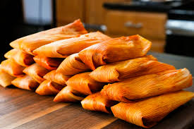

Tamales

Description
Tamales with chicken or pork filling
Ingredients
- Chicken
- Pork
- Flour
- Lard
- Canned tomato sauce
- Corn husks
Steps
- Boil chicken and pork
- Simmer the boiled chicken and pork with canned tomato sauce
- Mix flour with water to make dough
- Mix dough and lard
- Spread an even layer of dough onto one side of the corn husks using a spoon
- Add simmered chicken and pork on the inside of dough covered husks
- Wrap them up
- Put them into a steamer until done
- Optional, let them rest for a day and pan fry them in oil for a crispy exterior
Home